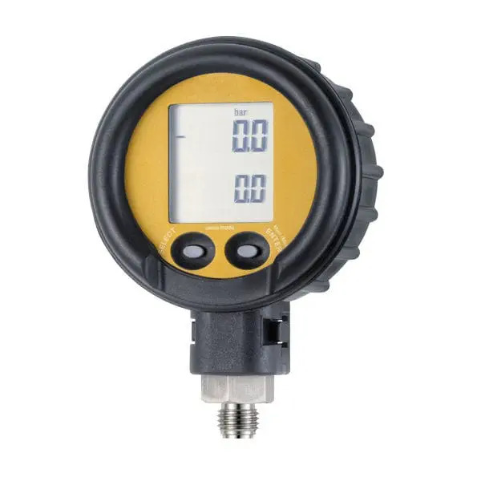
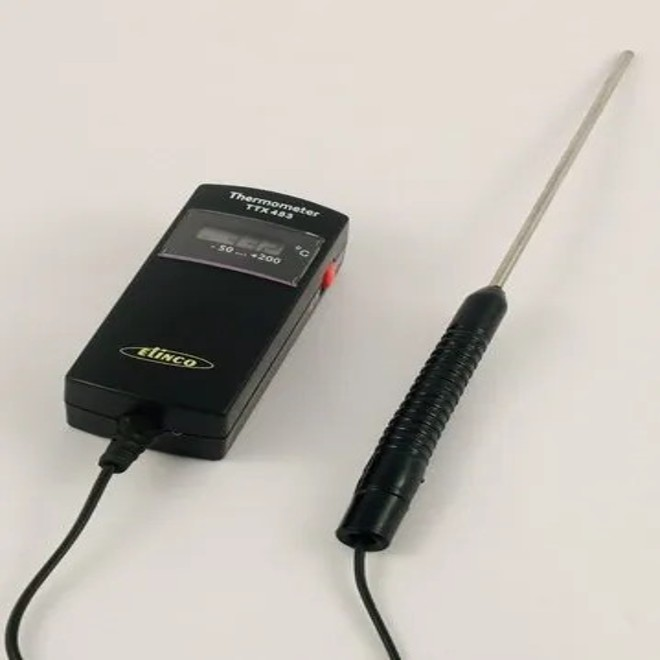
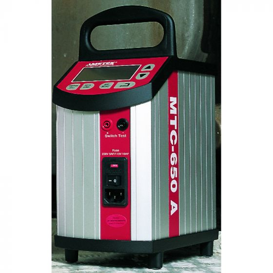
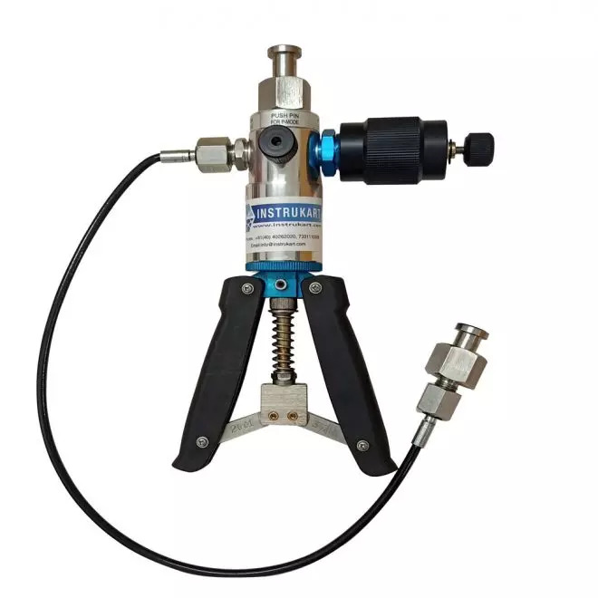
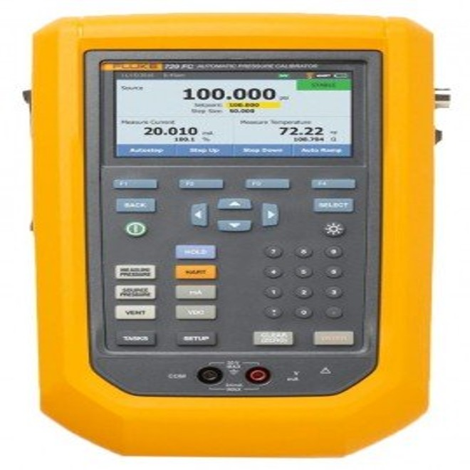
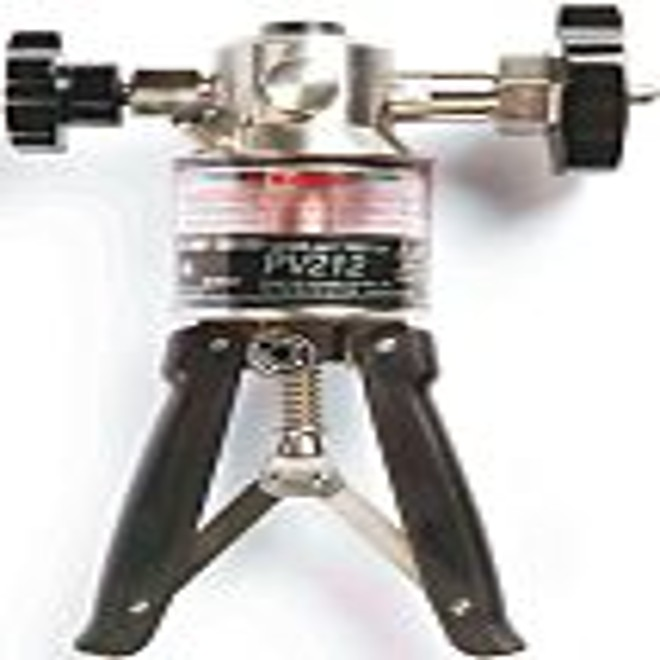

Servicing, repair and calibration of electronic, pneumatic and electrical instruments, plus design, installation and commissioning of control panels and PLC / SCADA systems.
Request a quoteView servicesRepair, servicing and calibration of marine and industrial instrumentation.
02ProductsControl panels, alarm systems and custom sensors built to order.
03StockistGauges, sensors, valves and panel accessories from stock.
04ContactTalk to our team in Bhandup, Mumbai.
We are dedicated to providing services, repairs and calibration of electronic, pneumatic and electrical instruments for measuring pressure, temperature, level, flow, RPM, density, gas detection, oil, voltage, current and frequency.
We focus on design, assembly, installation and commissioning of control panels and PLC / SCADA monitoring and control systems, including retrofits for ships in service and shore-based panels, plus custom instrumentation as per client needs.
We serve customers in our own environmentally controlled multi-laboratory facility or at their sites, with reliable, cost-effective retrofit solutions and a team for running repairs of automation control systems.
Our engineers and technicians have worked on maintenance, calibration, retrofits and new installations in dry docks across India, Dubai, Bahrain, Turkey, Senegal and more.






“Technologies for the safe use, protection of, and intervention in, the marine environment”